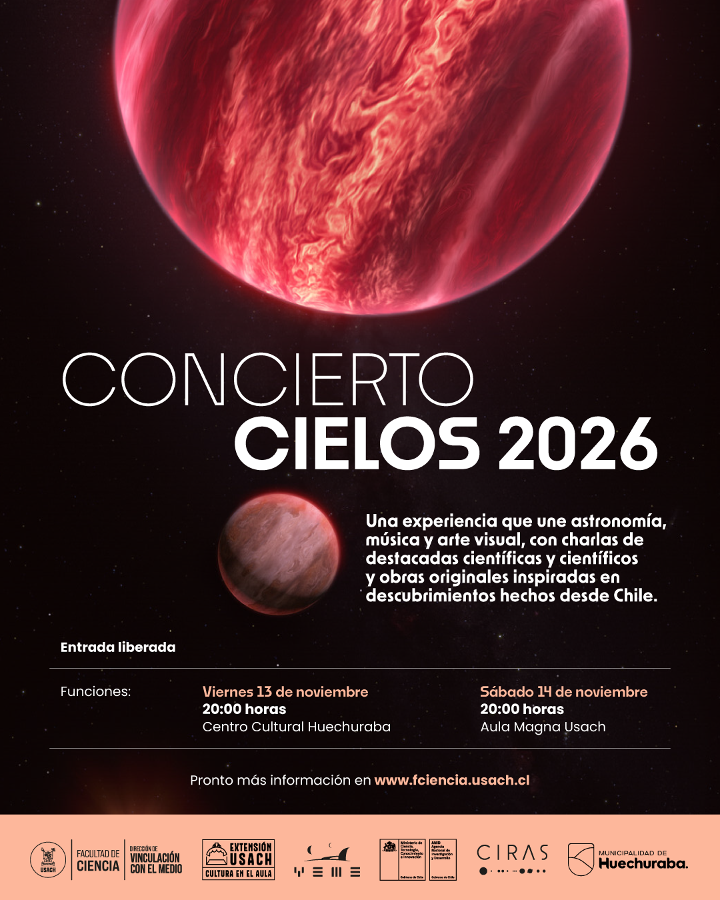

Desde una candidata a exoluna hasta la evolución de las galaxias y el universo: Concierto Cielos propone un recorrido por distintas escalas astronómicas, entrelazando nuevos descubrimientos, música en vivo y arte visual. Las funciones serán el viernes 13 de noviembre en el Centro Cultural Huechuraba y el sábado 14 de noviembre en el Aula Magna Usach, ambas a las 20:00 horas y con entrada liberada.
¿Cómo imaginar mundos que no podemos visitar, o los cambios que experimentan las galaxias a lo largo del tiempo? Cuatro investigadoras que hoy contribuyen activamente al avance de la astronomía compartirán con el público los hallazgos y las preguntas que orientan su trabajo. Sus charlas dialogarán con obras originales inspiradas en descubrimientos hechos desde Chile.
La charla de Alice Zurlo abordará el descubrimiento de una candidata a exoluna y dialogará con la obra de Pablo Ariel López titulada Retrato de una exoluna. Las intervenciones de Valeria Olivares, Alejandra Melo y Yara Jaffe ampliarán el recorrido hacia la evolución de las galaxias y del universo, conectando distintas escalas y tiempos de la historia cósmica.
La música estará a cargo de la Orquesta Concierto Cielos y el dúo Du Octantis. Sus interpretaciones darán vida a las composiciones de Pablo Ariel López, abriendo junto a las charlas un espacio para escuchar e imaginar los fenómenos que estudia la astronomía.
El artista visual Alvaro Pavez Cataldo aportará las visuales del concierto, conectando imágenes y datos astronómicos con la música y las charlas. Su trabajo es parte esencial de la experiencia de Concierto Cielos, donde sonido e imagen abren nuevas formas de explorar e imaginar el universo.
Concierto Cielos se desarrolla al alero de la Facultad de Ciencia de la Universidad de Santiago de Chile, el Centro CIRAS y el Núcleo Milenio sobre Exoplanetas Jóvenes y sus Lunas (YEMS), en colaboración con Extensión Usach. A diez años del primer concierto oficial, el proyecto sigue cultivando un encuentro entre arte, ciencia y comunidad.
Entrada liberada para ambas funciones. Más información en conciertocielos.cl.
